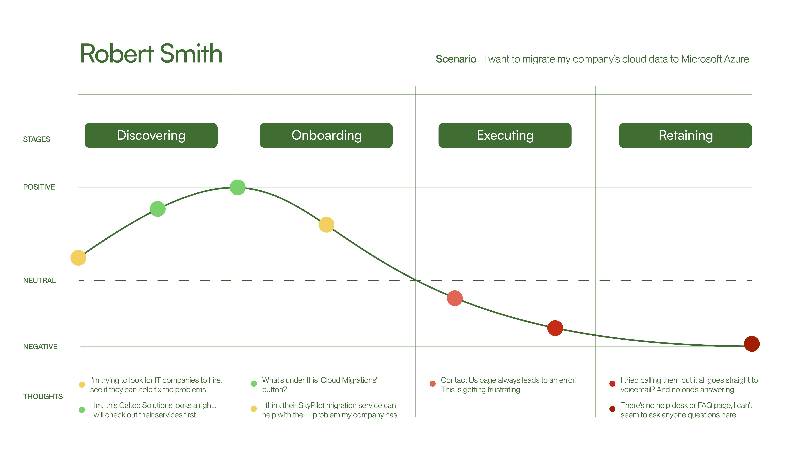

The project was created for an intensive UX Design hackathon hosted by Eunoia. Within an One-week period, UX research evolved into interaction design through the analysis of precedents that were guided by the design qualities and principles. This all culminated into a website redesign with purposeful content design.
Contributions:
Content Design, User Research, UX Design
Team:
Kelly Hady, Priscilla Cho, Joseph Lee
Duration:
Summer 2023, 5-day Hackathon Project
Caltec Solutions is an IT business support company working at the enterprise level with experience at a high-tech Fortune500 level of IT management. Caltec Solutions provides tech support, antivirus, conduct data backups and computer maintenance.
To identify usability issues of the client’s website, we performed individual heuristics evaluations on Caltec’s current website to determine varying degrees of usability issues and categorize the identified issues in various severity rating. Afterward, as a team, we evaluated the degrees of experience challenges. The image above is the heuristic evaluation that I conducted.
Using the conclusions we drew from the heuristic evaluation and the team discussion session, we created an Affinity Map to gather qualitative information about the client’s website. By conducting usability testing and making observations of the website, we categorized the users’ needs and challenges into sticky notes to generate ideas for potential solutions.
Through this process, we prioritized certain points of action and found that the website’s page flow and cognitive overload were key usability constraints.
Confusing Information Architecture and Content
After meeting with our client, we determined that the first problem was the information architecture and content of the website, highlighted by user complaints about unfamiliar functions, cognitive overload, and confusing information hierarchy.
Visual Design to support company’s identity
The second problem was the website’s design. Caltec’s brand identity relies heavily on visual design to convey a sense of professionalism, the client expressed the desire for a more professional and user-friendly website.
Unclear Interface Design
The last problem was the confusing call-to-action interfaces. The website featured symbols resembling buttons that merely served as visual elements or inconspicuous buttons that direct users to important information.
To better contextualize the the user challenges of the client’s website, I developed a user persona. This involved interviewing the client to ascertain their objectives and conducting research on the technical services frequently required by medium-sized companies, the primary target audience. The accompanying diagram visually encapsulates the demographic insights derived from this process.
To organize the structure information in a clear way, we mapped the website’s original information architecture and used our previous heuristics evaluation to pinpoint areas of cognitive overload and conflicting information hierarchy. From there, I re-routed the page flow of the website and re-wrote the contents of each page to simplify the information.
Strategies to Tackling the Issues
Our strategies involve overhauling the brand and colour language, typography, and information architecture to create a visually appealing website that communicates the brand's values effectively while providing an intuitive and seamless user experience.
Restructure the Website Architecture
By restricting the website’s architecture and re-organizing the content, this strategy reduces cognitive overload, providing a better experience navigating around the website and learning about the company’s provided services.
The Impact of the Website Redesign
By creating a professional image, the website can enhance the credibility of a business and inspire confidence among its target audience. An user-friendly website can significantly improve the overall user experience and reinforce a brand's reputation.
The secondary UX solution involves a user journey, used in conjunction with the user persona. The slope on the graph represents trends in emotion. As an example, there is a note on specific user frustration with the lack of a help desk or FAQ page. I divided the journey map into four sections, first defined by a user scenario on the site to find a solution to IT-related problems.
After redesigning the website, I crafted a user journey for post-redesign to visualize the potential user flow and their emotions in a specific scenario. The discovering and onboarding stage remain the same, but the slope curves upwards at the executing stage thanks to the implementation of a FAQ page and refinement of a contact page.
New Colour Palette to Represent Company’s identity
To enhance the professional appearance of the design, blue was selected for its trustworthy qualities, which are integral in establishing a credible and reputable image. Additionally, the use of coral orange conveys a sense of friendliness, contributing to the creation of a positive atmosphere for businesses.
New Font for Improved Readability
For font pairings, Satoshi was chosen as the primary header due to its alignment with the brand's identity and paired with Avenir for its legibility, making it an ideal choice for displaying dense information on digital screens. The font's accessibility also ensures a budget-friendly solution without compromising on quality.
Consistent Symbols and illustrations
The team opted for a softer illustration style for the website and imagery that matches technology and IT support themes as a supportive element throughout our web pages. I curated a gallery of illustrations that lends the website to the brand’s personable image.
New Iteration of Design Direction and Pages
In response to the client's desire for a website redesign, our team created a new design direction, opting for a more minimalist aesthetic. Upon finalizing the new artistic direction, we a mockup for the redesigned website. My specific contributions focused on rewriting content, designing the FAQ and Resources pages, sourcing the illustrations, and redesigning logos to align with the client's vision.
Effective Time Management
Given the overlap of the hackathon with two final exams, I faced the challenge of managing both the hackathon project and academic commitments. I addressed the situation by creating a schedule to effectively allocate my time. Additionally, open communication with my teammates about my circumstances helped foster understanding. Through this experience, I gained valuable skills in task balancing.
How to Identify UX Problem
Another learning from this project is learning how to frame a problem with consideration not only from the user’s perspective but from the business side as well. Conducting a client interview provided insights into the client's desires, and extensive research efforts led to the discovery of an opportunity. The validation of our findings by the client further reinforced the robustness of our approach.